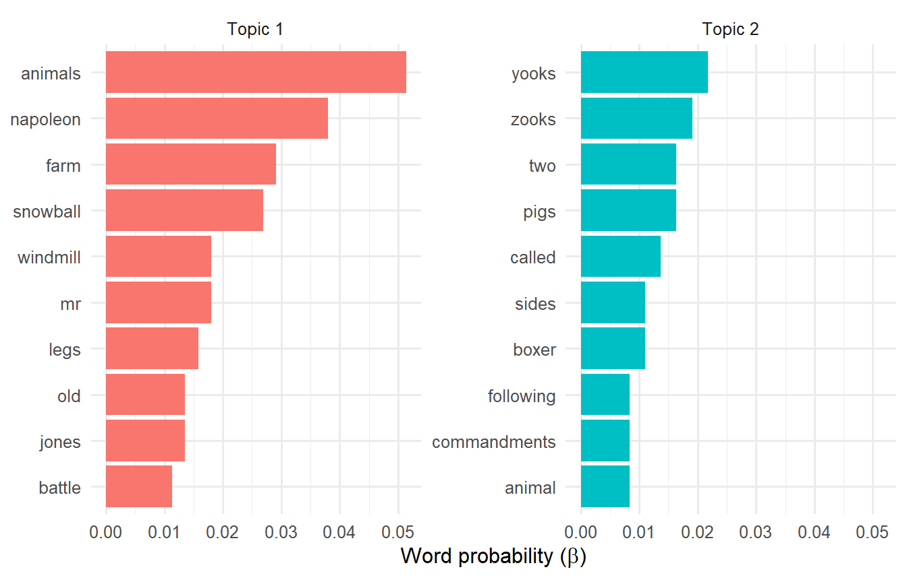
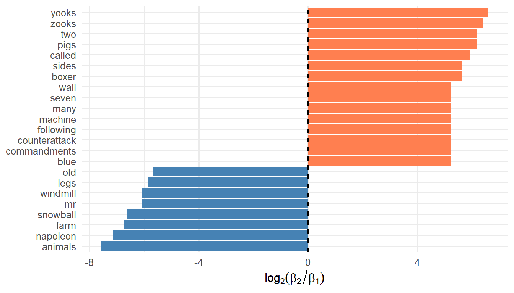
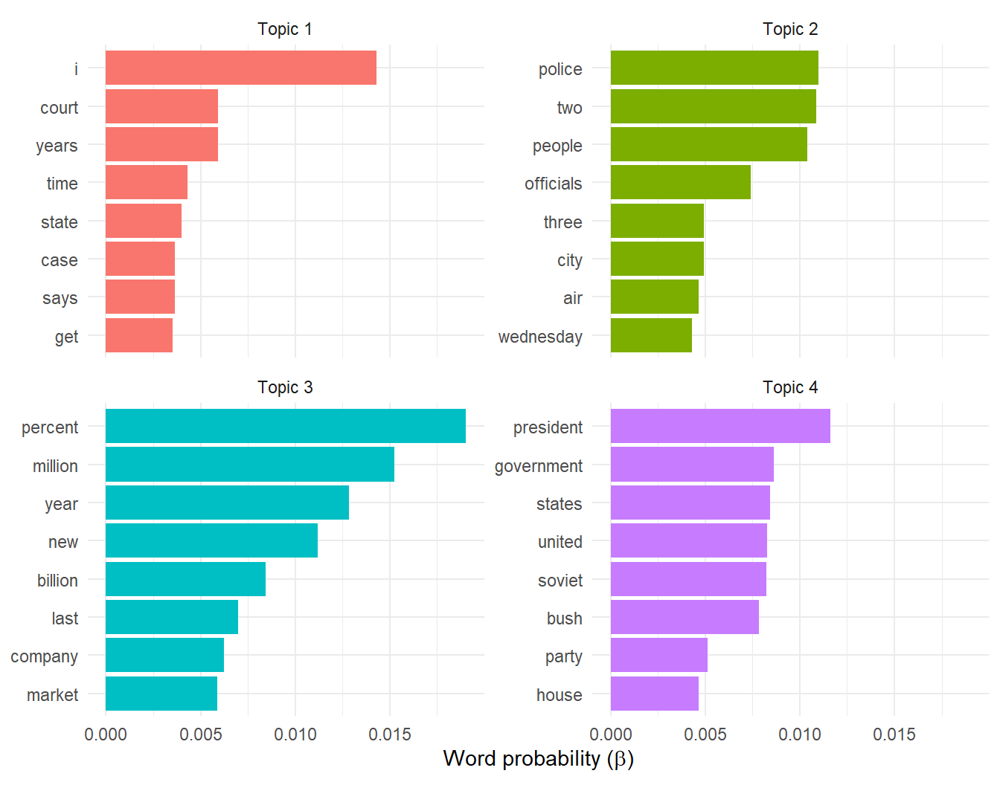
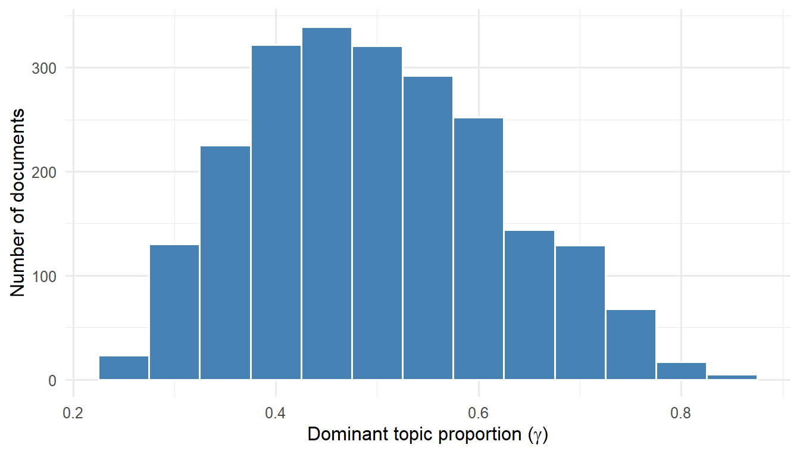
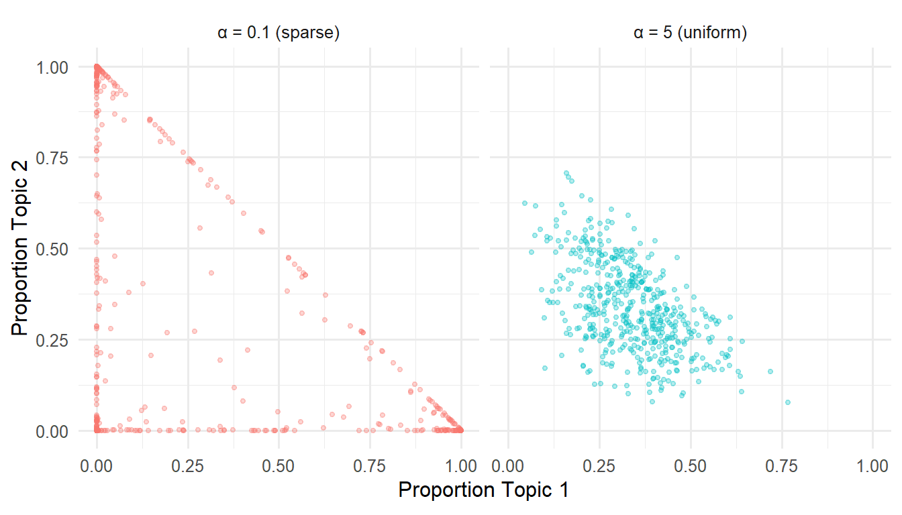

| Book | Paragraphs | Words (excl. stop words) |
|---|---|---|
| Animal Farm | 5 | 553 |
| The Butter Battle Book | 4 | 172 |
11 Topic Models
11.1 Introduction
Chapter 10 established that text can be represented as high-dimensional, sparse data. We learned to tokenize documents, construct term-document matrices, and use tf-idf to identify distinctive words. We also introduced topic models as methods for discovering latent themes—but deferred the question of how they work.
This chapter answers that question. We develop the intuition behind Latent Dirichlet Allocation (LDA), the most widely used topic model, through examples ranging from a toy corpus of two books to thousands of news articles. Along the way, we encounter the Dirichlet distribution—a probability distribution over probability vectors that gives LDA its name and its power.
11.1.1 The Core Insight
A topic model rests on two assumptions:
Each document is a mixture of topics. A news article might be 70% business and 30% politics; a quarterly report might be 40% financial performance, 35% strategic outlook, and 25% risk factors.
Each topic is a mixture of words. The “business” topic assigns high probability to words like “market”, “profit”, and “growth”; the “politics” topic assigns high probability to “congress”, “vote”, and “campaign”.
Given a corpus of documents, a topic model discovers both the topics (as probability distributions over words) and the topic mixture for each document. The model knows nothing about business or politics a priori—it infers topics from patterns of word co-occurrence.
11.2 The Generative Story
The key to understanding LDA is the generative story: a fictional account of how each document was created. Imagine generating a document as follows:
Step 1: Choose a topic mixture for this document.
Before writing anything, decide what proportion of the document will be devoted to each topic. For instance: “This document will be 70% Topic A and 30% Topic B.” This mixture is represented as a probability vector \(\boldsymbol{\gamma}_d = (\gamma_{d,1}, \ldots, \gamma_{d,K})\) summing to 1.
Step 2: For each word position in the document:
- Roll the topic dice according to \(\boldsymbol{\gamma}_d\) to select a topic.
- From that topic’s word distribution, generate a word.
Repeat until the document is complete.
This process is called a bag-of-words model because word order does not matter—only which words appear and how often. The generative story is fictional; no author actually writes this way. But if documents were generated this way, the resulting word patterns would resemble what we observe in real corpora.
LDA inverts this process. Given observed documents, LDA infers the topics and mixtures that best explain the data. The algorithm asks: “What topics, and what document-specific mixtures of those topics, would make these documents likely?”
11.3 Toy Example: Two Books
To build intuition, we begin with a corpus where we know the ground truth. Can LDA distinguish two very different books without being told which paragraphs came from which?
11.3.1 The Data
Animal Farm (George Orwell, 1945) tells of farm animals who overthrow their human masters, only to see the pigs become tyrants—an allegory for Soviet communism. The Butter Battle Book (Dr. Seuss, 1984) depicts Yooks and Zooks in escalating conflict over which side to butter bread—an allegory for the Cold War nuclear arms race.
We use Wikipedia’s plot summaries of these books, treating each paragraph as a separate “document.” This yields a small corpus where we know each document’s true source.
11.3.2 Fitting LDA with K = 2
We construct a document-term matrix and fit LDA requesting \(K = 2\) topics—matching the number of source books.
Show the code
af_bbb_lda <- topicmodels::LDA(
x = af_bbb_dtm,
k = 2,
method = "Gibbs",
control = list(seed = 42)
)The LDA() function from the topicmodels package fits the model using Gibbs sampling, an iterative algorithm that infers topic assignments. Setting a seed ensures reproducibility.
11.3.3 Examining the Results: Word Distributions (β)
Each topic is a probability distribution over words. We extract these distributions and examine the highest-probability words for each topic:

Topic 1’s top words include “animals”, “napoleon”, “farm”, and “snowball”—clearly Animal Farm. Topic 2’s top words include “yooks”, “zooks”, “wall”, and “battle”—clearly The Butter Battle Book. LDA successfully separated the two sources without being told which paragraphs came from which book.
11.3.4 Log-Ratio Visualization
Another way to compare topics is to examine which words most strongly distinguish them. For words appearing in both topics, we compute the log-ratio of probabilities:
\[ \log_2 \left( \frac{\beta_2}{\beta_1} \right) \qquad(11.1)\]
Positive values indicate words more probable in Topic 2; negative values indicate words more probable in Topic 1.

The character names “yooks” and “zooks” strongly distinguish Topic 2, while “napoleon”, “snowball”, and “animals” strongly distinguish Topic 1. This visualization complements the top-words bar chart by highlighting contrast rather than absolute probability.
11.3.5 Toy Example: Takeaways
This toy example demonstrates that LDA works—it recovered the two sources without supervision. But interpretation requires judgment: “yooks” means nothing without context. And with only 9 documents (paragraphs), this is far from a realistic application. Real corpora have thousands of documents, and the topics discovered may not correspond to obvious categories.
11.4 Scaling Up: AP News Articles
We now turn to a larger corpus: 2,246 Associated Press articles from around 1988, provided by the topicmodels package. In Chapter 10, we fit \(K = 2\) topics and found one resembling business/finance and another resembling politics/government. What happens with more topics?
11.4.1 Fitting LDA with K = 4

With four topics, we see finer distinctions emerge:
| Topic | Top Words | Interpretation |
|---|---|---|
| 1 | i, court, years, time, state, case, says, get | Legal |
| 2 | police, two, people, officials, three, city, air, wednesday | Local News/Crime |
| 3 | percent, million, year, new, billion, last, company, market | Business/Finance |
| 4 | president, government, states, united, soviet, bush, party, house | International/Cold War |
These interpretations require domain knowledge. The algorithm provides word distributions; the analyst provides labels. Note that the 1988 publication date explains the prominence of Cold War vocabulary in Topic 4.
11.4.2 Document-Topic Mixtures \((\gamma)\)
LDA also estimates each document’s topic mixture. We extract these as the \(\gamma\) matrix:
| Doc ID | Topic 1 | Topic 2 | Topic 3 | Topic 4 |
|---|---|---|---|---|
| 195 | 0.53 | 0.16 | 0.14 | 0.18 |
| 526 | 0.18 | 0.44 | 0.15 | 0.23 |
| 1842 | 0.12 | 0.62 | 0.13 | 0.13 |
| 2227 | 0.10 | 0.09 | 0.72 | 0.09 |
Some documents lean heavily toward one topic; others are more evenly mixed. This “soft clustering” is a key feature of topic models: unlike \(K\)-means, which assigns each observation to exactly one cluster, LDA allows documents to belong partially to multiple topics.

The histogram shows that while some articles are dominated by a single topic (\(\gamma > 0.8\)), many are mixtures. This reflects the reality that news articles often cover multiple themes—a story about government economic policy might blend politics and business.
11.5 The Dirichlet Distribution
Why is this method called Latent Dirichlet Allocation? The Dirichlet distribution is the mathematical engine that makes LDA work. Understanding it conceptually—without diving into the full mathematical treatment—illuminates the model’s behavior.
11.5.1 A Distribution Over Mixtures
Recall that each document has a topic mixture: a probability vector like \((0.7, 0.2, 0.1)\) indicating proportions devoted to each topic. Where do these mixtures come from?
LDA assumes topic mixtures are drawn from a Dirichlet distribution—a probability distribution whose outcomes are themselves probability vectors. Just as a normal distribution generates real numbers, the Dirichlet distribution generates vectors of positive numbers that sum to 1.
11.5.2 The Concentration Parameter
The Dirichlet distribution has a concentration parameter \(\alpha\) that controls how “spread out” or “concentrated” the generated mixtures are:
Small \(\alpha\) (< 1): Generates sparse mixtures. Documents tend toward one dominant topic. “This article is 95% politics.”
Large \(\alpha\) (> 1): Generates uniform mixtures. Documents spread across many topics. “This article is 30% politics, 35% business, 35% international.”

With \(\alpha = 0.1\), most samples cluster near the corners of the simplex—indicating dominance by one topic. With \(\alpha = 5\), samples cluster near the center—indicating balanced mixtures. LDA typically uses small \(\alpha\), reflecting the intuition that documents are usually about something specific.
11.5.3 Two Dirichlet Distributions in LDA
LDA actually uses two Dirichlet distributions:
The one just noted, having concentration parameter \(\alpha\), controls topic mixtures per document. Small \(\alpha\)-values mean documents focus on few topics.
The other, having concentration parameter \(\beta\) 1, controls word mixtures per topic. Small values mean topics focus on specific words rather than spreading probability across the vocabulary.
These are hyper-parameters that can be tuned, though default values often work well. For a fuller mathematical treatment of the Dirichlet distribution, including its density function and conjugacy to the multinomial distribution, see Appendix 11.A.
11.6 Choosing K
Like \(K\)-means clustering, LDA requires specifying the number of topics \(K\). This choice significantly affects the results.
Too few topics: Themes are too broad. Business and finance might be lumped together; important distinctions are lost.
Too many topics: Themes are too narrow. Redundant topics emerge; interpretation becomes difficult.
11.6.1 Comparing K Values
With \(K = 2\), we get broad themes (business vs. politics). With \(K = 4\), we see finer distinctions (domestic politics vs. international affairs). With \(K = 8\), we might discover additional themes like sports, legal affairs, or technology—or we might see redundant, hard-to-interpret topics.
| Topic | K = 2 | K = 4 | K = 8 |
|---|---|---|---|
| Topic 1 | i, people, two, president, government | i, court, years, time, state | soviet, government, party, union, president |
| Topic 2 | percent, new, year, million, last | police, two, people, officials, three | bush, president, house, i, dukakis |
| Topic 3 | NA | percent, million, year, new, billion | i, years, time, like, first |
| Topic 4 | NA | president, government, states, united, soviet | police, people, city, two, miles |
| Topic 5 | NA | NA | percent, million, year, billion, new |
| Topic 6 | NA | NA | court, case, federal, state, attorney |
| Topic 7 | NA | NA | military, united, two, force, air |
| Topic 8 | NA | NA | year, workers, program, new, report |
11.6.2 Practical Guidance
There is no universally reliable method for choosing \(K\). Practical approaches include:
Domain knowledge. How many themes do you expect? For news articles, 4–10 might be reasonable; for academic papers in a narrow field, 3–5 might suffice.
Interpretability. Can you name each topic? Do the top words cohere? If topics are redundant or incoherent, try fewer.
Iteration. Fit models with \(K = 2, 3, 5, 10\). Compare results. Look for the value where topics are distinct and interpretable.
Coherence metrics. Statistical measures of topic quality exist (e.g., based on word co-occurrence), but they do not always align with human judgment.
Consider your goal. For exploration (getting a broad sense of themes), fewer topics may suffice. For fine-grained analysis, more topics may be warranted.
11.7 Mathematical Framework
For readers seeking a more formal treatment, this section presents the mathematical notation and generative model underlying LDA. The full Bayesian framework, including the Dirichlet distribution’s density and its conjugacy to the multinomial, appears in Appendix 11.A.
11.7.1 Notation
Let \(\mathcal{D}\) denote a corpus of documents. Each document \(d \in \mathcal{D}\) is a sequence of words:
\[ d = (w_1, w_2, \ldots, w_{|d|}) \]
where \(|d|\) denotes the number of words in document \(d\). The vocabulary \(V\) is the set of distinct terms appearing in the corpus, with \(|V| = N\) terms indexed as \(v_1, \ldots, v_N\).
We specify \(K\) topics. Each topic \(k\) is a probability distribution over the vocabulary, represented as a vector \(\boldsymbol{\beta}_k = (\beta_{k,1}, \ldots, \beta_{k,N})\) where \(\beta_{k,v}\) is the probability of term \(v\) under topic \(k\), and \(\sum_v \beta_{k,v} = 1\).
Each document \(d\) has a topic mixture \(\boldsymbol{\gamma}_d = (\gamma_{d,1}, \ldots, \gamma_{d,K})\) where \(\gamma_{d,k}\) is the proportion of document \(d\) devoted to topic \(k\), and \(\sum_k \gamma_{d,k} = 1\).
11.7.2 The Generative Model
LDA posits that documents are generated as follows:
For each topic \(k \in \{1, \ldots, K\}\): Draw word distribution \(\boldsymbol{\beta}_k \sim \text{Dir}(\boldsymbol{\eta})\).
For each document \(d \in \mathcal{D}\):
- Draw topic mixture \(\boldsymbol{\gamma}_d \sim \text{Dir}(\boldsymbol{\alpha})\).
- For each word position \(j \in \{1, \ldots, |d|\}\):
- Draw topic assignment \(z_{d,j} \sim \text{Multinomial}(\boldsymbol{\gamma}_d)\).
- Draw word \(w_{d,j} \sim \text{Multinomial}(\boldsymbol{\beta}_{z_{d,j}})\).
Here \(\text{Dir}(\cdot)\) denotes the Dirichlet distribution and \(\boldsymbol{\alpha}\), \(\boldsymbol{\eta}\) are hyperparameters controlling the concentration of topic and word mixtures respectively.
11.7.3 Inference
Given observed documents, we wish to infer the latent variables: topic distributions \(\boldsymbol{\beta}_k\), document mixtures \(\boldsymbol{\gamma}_d\), and word-level topic assignments \(z_{d,j}\). Exact inference is intractable, so practical implementations use approximate methods.
The topicmodels package offers two approaches: Variational Expectation-Maximization (VEM, the default) and Gibbs sampling. Gibbs sampling iteratively updates each word’s topic assignment conditional on all other assignments, eventually converging to a sample from the posterior distribution. The Dirichlet distribution’s conjugacy to the multinomial makes these updates computationally efficient.
For further details on inference algorithms, see 2 and Blei, Ng, and Jordan (2003).
11.8 Summary
This chapter developed the intuition and mechanics of topic models, focusing on Latent Dirichlet Allocation.
Key concepts:
- Topic models assume documents are mixtures of topics, and topics are mixtures of words.
- The generative story imagines documents created by first choosing a topic mixture, then generating each word from a topic-specific distribution.
- LDA inverts this process, inferring topics from observed word patterns.
- The Dirichlet distribution generates probability vectors; its concentration parameter controls whether mixtures are sparse (one dominant topic) or uniform (many topics).
- Choosing \(K\) requires domain knowledge and iterative exploration; there is no automatic method.
Key notation:
| Symbol | Meaning |
|---|---|
| \(K\) | Number of topics (analyst’s choice) |
| \(\boldsymbol{\alpha}\) | Dirichlet parameter for document-topic mixtures |
| \(\beta_{k,v}\) | Probability of term \(v\) in topic \(k\) |
| \(\gamma_{d,k}\) | Proportion of topic \(k\) in document \(d\) |
Constraints:
- For each topic \(k\): \(\sum_v \beta_{k,v} = 1\)
- For each document \(d\): \(\sum_k \gamma_{d,k} = 1\)
Connections to earlier material:
| Earlier Concept | Topic Model Analog |
|---|---|
| \(K\)-means clustering | LDA (documents → topics) |
| Cluster centroids | Word distributions (\(\boldsymbol{\beta}\)) per topic |
| Cluster assignments | Topic mixtures (\(\boldsymbol{\gamma}\)) per document |
| Hard vs. soft clustering | \(K\)-means (hard) vs. LDA (soft) |
| PCA loadings | Word weights per topic |
Topic models are “soft clustering”—documents belong partially to multiple topics, just as factor analysis allows observations to load on multiple factors.
The Two LDAs:
Chapter 9 introduced Linear Discriminant Analysis—a supervised method that finds directions separating known classes. This chapter presented Latent Dirichlet Allocation—an unsupervised method that discovers topics from word co-occurrence. Both “allocate” observations to categories, but with very different goals and methods.
11.9 Team Exercises
Interpret Topics. Using the AP News \(K = 4\) results: (a) Propose alternative labels for each topic, justifying with top words. (b) Which topic is most coherent? Least coherent? Why? (c) Find a word that appears prominently in multiple topics. What does this suggest about that word?
Document Mixtures. For a document with \(\boldsymbol{\gamma} = (0.4, 0.3, 0.2, 0.1)\): (a) What does this mixture tell you about the document’s content? (b) How would you explain this to a non-technical colleague? (c) Would you classify this document into one topic or multiple? What are the tradeoffs?
Choosing K. You have a corpus of 5,000 customer support tickets. (a) What value of \(K\) would you start with? Why? (b) Design an evaluation process to compare different values of \(K\). (c) How would you explain your final choice to stakeholders?
LDA vs. LLMs. For theme discovery in a large corpus: (a) When would you prefer LDA over asking an LLM to identify themes? (b) When would you prefer an LLM? (c) Design a hybrid workflow that combines both approaches, specifying which tool you would use at each stage and why.
11.10 Resources
Foundational papers:
- Latent Dirichlet Allocation. Journal of Machine Learning Research. The original LDA paper.
- Probabilistic Topic Models. In Handbook of Latent Semantic Analysis. Accessible introduction with details on Gibbs sampling.
Practical guidance:
Silge and Robinson. Text Mining with R, Chapter 6. Tidy approach to topic modeling in R.
- LDA in Practice. Blog post with practical advice on hyperparameters and evaluation.
R functions reference:
| Function | Package | Purpose |
|---|---|---|
LDA() |
topicmodels | Fit LDA model |
tidy() |
tidytext | Extract β (word-topic) or γ (document-topic) matrices |
cast_dtm() |
tidytext | Convert tidy data to document-term matrix |
perplexity() |
topicmodels | Compute model fit metric |
11.11 Appendix 11.A: The Dirichlet Distribution
This appendix provides the mathematical foundation for the Dirichlet distribution, which underlies the “mixture” structure in LDA. We begin with the multinomial distribution, introduce Bayesian inference with conjugate priors, and then present the Dirichlet distribution as the natural generalization.
11.11.1 The Multinomial Distribution
Consider a categorical random variable \(X\) that selects one of \(K\) distinct categories \(\{c_1, \ldots, c_K\}\) with probabilities \(\mathbf{p} = (p_1, \ldots, p_K)\) where \(\sum_k p_k = 1\) and each \(p_k > 0\).
If we observe \(n\) independent draws from this distribution, the counts \(\mathbf{S} = (S_1, \ldots, S_K)\) follow a multinomial distribution:
\[ P(\mathbf{S} = \mathbf{s} \mid \mathbf{p}) = \binom{n}{\mathbf{s}} \prod_{k=1}^{K} p_k^{s_k} \qquad(11.2)\]
where \(\binom{n}{\mathbf{s}} = \frac{n!}{s_1! \cdots s_K!}\) is the multinomial coefficient.
For \(K = 2\), this reduces to the binomial distribution.
11.11.2 Bayesian Inference and Conjugate Priors
In Bayesian inference, we represent uncertainty about the probability vector \(\mathbf{p}\) with a prior distribution. After observing data, we update to a posterior distribution.
A prior is conjugate to a likelihood if the posterior belongs to the same family as the prior. This property simplifies computation enormously.
For the binomial distribution (i.e., \(K = 2\)), the conjugate prior is the beta distribution:
\[ P(p) = \frac{\Gamma(\alpha + \beta)}{\Gamma(\alpha)\Gamma(\beta)} p^{\alpha - 1}(1-p)^{\beta - 1} \qquad(11.3)\]
where \(\alpha, \beta > 0\) are shape parameters and \(\Gamma(\cdot)\) is the gamma function.
If we observe \(s_1\) successes and \(s_2 = n - s_1\) failures, the posterior is \(\text{Beta}(\alpha + s_1, \beta + s_2)\)—the same family, with updated parameters.
11.11.3 The Dirichlet Distribution
The Dirichlet distribution generalizes the beta distribution to \(K \geq 2\) categories. It is the conjugate prior for the multinomial distribution.
The Dirichlet distribution with parameter vector \(\boldsymbol{\alpha} = (\alpha_1, \ldots, \alpha_K)\) has density:
\[ P(\mathbf{p}) = \frac{\Gamma(\alpha_1 + \cdots + \alpha_K)}{\Gamma(\alpha_1) \times \cdots \times \Gamma(\alpha_K)} \prod_{k=1}^{K} p_k^{\alpha_k - 1} \qquad(11.4)\]
where each \(\alpha_k > 0\) and the probability vector \(\mathbf{p}\) lies on the \((K-1)\)-dimensional simplex (i.e., \(p_k \geq 0\) and \(\sum_k p_k = 1\)).
11.11.4 The Concentration Parameter
In the symmetric case where all \(\alpha_k = \bar{\alpha}\), the sum \(\alpha_+ = K\bar{\alpha}\) is called the concentration parameter. Its value controls the distribution’s shape:
\(\bar{\alpha} < 1\): The distribution concentrates near the corners of the simplex, generating sparse probability vectors dominated by one or few categories.
\(\bar{\alpha} = 1\): The distribution is uniform over the simplex.
\(\bar{\alpha} > 1\): The distribution concentrates near the center of the simplex, generating probability vectors spread more evenly across categories.
Different technical communities parameterize the Dirichlet differently. Some use \(\alpha_+\) directly; others use \(\bar{\alpha} = \alpha_+/K\). The topicmodels package uses a symmetric Dirichlet with a single concentration value. When reading the literature, check which convention is in use.
11.11.5 Conjugacy and Posterior Updating
If the prior on \(\mathbf{p}\) is \(\text{Dir}(\boldsymbol{\alpha})\) and we observe multinomial counts \(\mathbf{s} = (s_1, \ldots, s_K)\), the posterior is:
\[ \mathbf{p} \mid \mathbf{s} \sim \text{Dir}(\boldsymbol{\alpha} + \mathbf{s}) \qquad(11.5)\]
That is, we simply add the observed counts to the prior parameters. This elegant updating rule is why the Dirichlet distribution is central to LDA: it makes the Gibbs sampling updates computationally tractable.
11.11.6 Role in LDA
In LDA, Dirichlet distributions serve as priors in two places:
Document-topic mixtures: Each document’s topic proportions \(\boldsymbol{\gamma}_d\) are drawn from \(\text{Dir}(\boldsymbol{\alpha})\). A small \(\alpha\) encourages documents to focus on few topics.
Topic-word distributions: Each topic’s word probabilities \(\boldsymbol{\beta}_k\) are drawn from \(\text{Dir}(\boldsymbol{\eta})\). A small \(\eta\) encourages topics to assign high probability to few words.
The conjugacy property means that as we observe words in documents and update our beliefs about topic assignments, the posterior distributions remain Dirichlet, enabling efficient iterative inference.
11.11.7 References for Appendix
The topic modeling literature also uses \(\delta\) or \(\eta\) in place of \(\beta\).↩︎